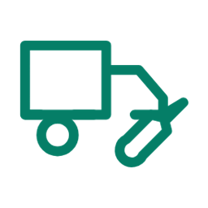
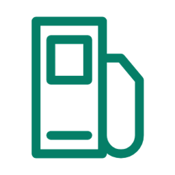
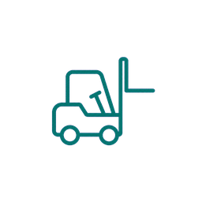
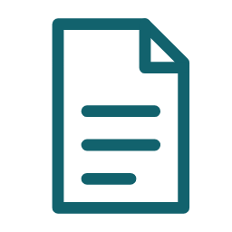

法人の運送会社向け
急な資金不足に。 300万円以上の事業資金を お探しですか？
車両修理・車両購入・燃料費・人件費・運転資金など、
急ぎでまとまった資金が必要な運送会社へ。
運送事業者向けビジネスローン
アクト・ウィル
- 審査最短60分
- 300万円〜最大1億円
- 実質年率3.00%〜15.00%
- 全国対応・来店不要
法人限定｜原則、第三者保証人・不動産担保不要※
※法人代表者の連帯保証が必要です。審査内容・融資商品によって担保が必要になる場合があります。
※審査があります。即日融資を保証するものではありません。
まずは3つ確認してください
-
01
法人の運送会社
ですか？ -
02
300万円以上の
事業資金が
必要ですか？ -
03
できるだけ早く
資金を確保したい
ですか？
3つとも「はい」なら、アクト・ウィルの運送事業者向けビジネスローンを検討できます。
公式の貸付条件では融資対象は法人、融資金額は300万円〜1億円です。
仕事はある。でも、支払いは待ってくれない。
運送会社の資金ギャップは、突然やってくる。こんな場面で事業資金が必要になります。
-

トラックの
故障・修理突然の故障で予定していなかった修理費が発生した。
-
車両購入・
増車新しい仕事を受注したものの、車両を用意するための資金が先に必要。
-

燃料費・
高速代売上の入金前に、日々の運行コストの支払いが続く。
-
給与・
運転資金売上は立っているものの、一時的に手元資金が不足している。
-

設備投資
売上を伸ばすチャンスはあるが、先にまとまった資金が必要。
-
複数の借入
複数の返済先があり、資金繰りを整理したい。
資金調達方法を決める前に
「何のために、いつまでに、いくら必要か」で選択肢は変わります
| 銀行融資 | ファクタリング | ビジネスローン | |
|---|---|---|---|
| 特徴 | 金利は低めだが、審査に時間が かかりやすい |
売掛債権を早期現金化する方法 | スピーディに まとまった資金を調達できる |
| メリット | 金利が低い 信用力の向上につながる |
担保不要で早く資金化しやすい 借入ではない |
審査が早く、使途が自由 事業成長のスピードに対応 |
| 向いている ケース |
時間に余裕がある 設備投資など長期的な資金計画 |
売掛金が多く、すぐに 資金化したいとき |
300万円以上の資金を できるだけ早く準備したい |
300万円以上の資金が必要で、できるだけ早く準備したい運送会社には、ビジネスローンが有力な選択肢です。
今回紹介するビジネスローン
法人の運送事業者向け
アクト・ウィル
-
300万円〜
最大1億円まとまった事業資金を必要とする法人向けの融資枠
-
仮査定は
最短60分WEB申込み後、まず簡単審査・仮査定が行われます
-
最短即日
融資にも対応急いでいる場合も相談可。審査状況により異なります
-
原則、第三者
保証人・不動産
担保不要代表者の連帯保証があれば、その他は原則不要
-
全国対応・
来店不要全国の法人から申込み可能と案内されています
※審査があります。即日融資を保証するものではありません。
こんな法人運送会社に向いています
- 300万円以上のまとまった事業資金が必要
- 車両修理や車両購入の資金が必要
- 燃料費・人件費などの運転資金を確保したい
- 新規案件や増車のための先行資金が必要
- 銀行以外の資金調達方法も確認したい
- 不動産担保や第三者保証人を用意するのが難しい
- 他社で融資を断られたが、別の会社でも審査してみたい
こんな方には向いていません
- 個人事業主の方運送事業者向け商品の融資対象は法人です。
- 必要額が300万円未満の方融資金額は300万円〜となっています。
- 資金調達を急いでいない方時間に余裕があるなら銀行融資なども比較を。
- とにかく金利の低さだけを最優先したい方実質年率は3.00%〜15.00%。条件は審査で決まります。
他社で断られた場合でも仮審査は可能
もちろん、他社で断られていても必ず融資を受けられるという意味ではありません。会社ごとに審査があります。
申込みから融資まで
-
1
WEBから申込み
簡単なフォームから
必要事項を入力 -
2
簡単審査・仮査定
（最短60分）最短60分で結果を
メールでご連絡 -
3

審査結果・必要書類の提出
審査結果のご連絡後、
必要書類をご提出 -
4
契約・融資
契約完了後、
ご指定口座に入金
最初の申込み＝融資契約ではありません申込み → 仮査定 → 審査結果 → 必要書類 → 契約。まずは「自社が利用できそうか」「どのような条件になるか」を確認してから判断できます。
仮査定で条件を確認する›貸付条件
| 融資対象 | 法人 |
|---|---|
| 融資金額 | 300万円〜1億円 |
| 実質年率 | 3.00%〜15.00% |
| 遅延損害金年率 | 20.00% |
| 返済方法 | 一括または分割返済（元金均等払い） |
| 返済期間・回数 | 1ヶ月〜3年／1回〜36回 |
| 保証人・担保 | 原則、第三者保証人・不動産担保なし（要審査） |
| 必要書類 | 代表者本人を確認する書類、決算報告書の一部（損益計算書、売掛金・買掛金内訳書）など |
| 契約時締結費用 | 印紙代（実費） |
以上はアクト・ウィルの運送事業者向け公式ページに掲載されている貸付条件です。
会社情報・信頼性
事業資金を借りる会社だからこそ、金利や融資額だけでなく、会社情報や貸金業登録も確認しておきましょう。
| 会社名 | アクト・ウィル株式会社 |
|---|---|
| 代表取締役 | 谷口友祐 |
| 所在地 | 東京都豊島区東池袋3-11-9 |
| 資本金 | 5,500万円 |
| 貸金業登録番号 | 東京都知事（5）第31521号 |
これらの会社情報・登録番号は公式サイトに掲載されています。
よくあるご質問
いいえ。審査があります。申込み後に仮査定・審査が行われ、融資可否や条件が決まります。
今回紹介している運送事業者向け商品の融資対象は法人です。
公式の貸付条件では300万円〜1億円となっています。
簡単審査・仮査定は最短60分です。
法人代表者の連帯保証があれば、原則としてその他の保証人・不動産担保は不要です。ただし、一部の商品や審査内容によって担保が必要になる場合があります。
他社で断られた場合でも申込みは可能で、申込み後に仮審査が行われます。ただし、審査通過を保証するものではありません。
最短即日融資には対応していますが、審査状況によって即日実行できない場合があります。公式FAQでは、即日を希望する場合は午前中までの申込みがスムーズと案内されています。
資金が必要なタイミングは
待ってくれません。
- 法人の運送会社で
- 300万円以上の事業資金が必要
- できるだけ急いでいる
- 銀行以外の選択肢も探している
※審査があります。※即日融資を保証するものではありません。
※融資条件は審査結果によって異なります。
※契約前に金利、返済額、返済期間などの条件をご確認ください。
法人限定｜全国対応・来店不要